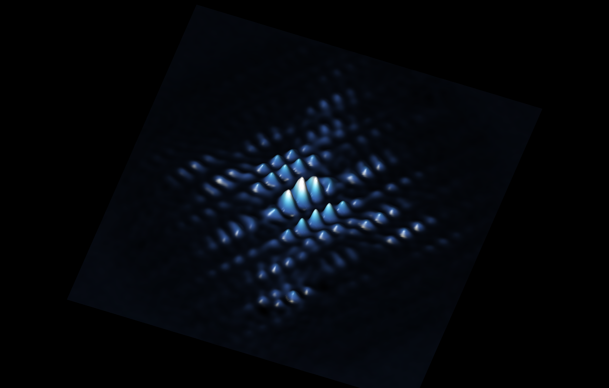

Scanning Tunnelling Microscopy


We use state-of-the-art ultralow-temperature scanning tunnelling microscopy (STM), integrated with high-frequency and optical capabilities, to investigate the structural, electronic, magnetic, and optical properties of quantum materials, semiconductor surfaces, and interfaces at the atomic scale. Our research aims to understand how local electronic structure, spin interactions, and atomic-scale disorder give rise to emergent quantum phenomena and determine the behaviour of quantum devices. Our current research areas include:
- Microscopic origins of loss mechanisms in superconducting films
- Correlated states in disordered systems
- Spatially precise single electron spin resonance